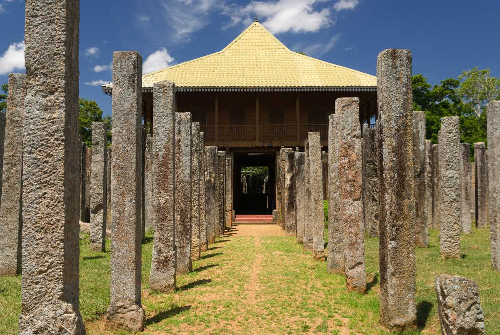
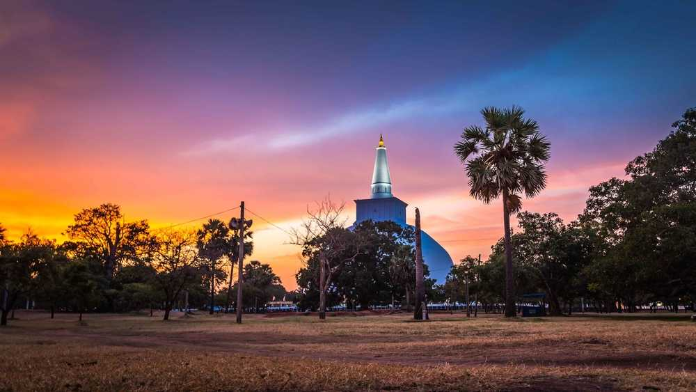
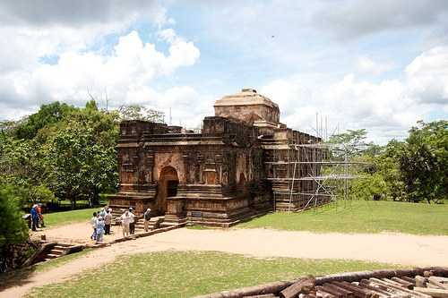

SRI MAHA BOHIYA

Anuradhapura Sacred City has been declared a World Heritage Site by UNESCO. The main reason why the historical city of Anuradhapura became a sacred city was the Jaya Sri Maha Bodhi. This sacred tree was plant in the Royal Garden of Anuradhapura's historical Megha forest in the month of Uduvap 236 BC. The present age of the Jaya Sri Maha Bodhi in Anuradhapura is 2247 years.
LOVAMAHAPAYA
Lovamahapaya is a building situated between Ruwanweliseya and Sri Mahabodiya in the ancient city of Anuradhapura, Sri Lanka. It is also known as the Brazen Palace or Lohaprasadaya because the roof was covered with bronze tiles.
RUWANWALISEYA
The Ruwanweli Maha Seya, also known as the Mahathupa is a stupa (a hemispherical structure containing relics) in Anuradhapura, Sri Lanka. Two quarts or one Dona of the Buddha's relics are enshrined in the stupa, making it the largest collection of his relics anywhere. It was built by Sinhalese King Dutugemunu in c. 140 B.C., who became king of Sri Lanka after a war in which the Chola King Elāra was defeated. It is also known as Swarnamali Seya, Svaṇṇamāli Mahaceti (in Pali) and Rathnamali Seya.
THUPARAMAYA
Thuparamaya is the first Buddhist temple that was constructed, after the arrival of mahinda thero(mahindagamanaya) in Sri Lanka. Located in the sacred area of Mahamewna park, the Thuparamaya Stupa is the earliest Dagoba to be constructed in the island, dating back to the reign of King Devanampiya Tissa (247-207 BC). The temple has been formally recognised by the Government as an archaeological site in Sri Lanka.